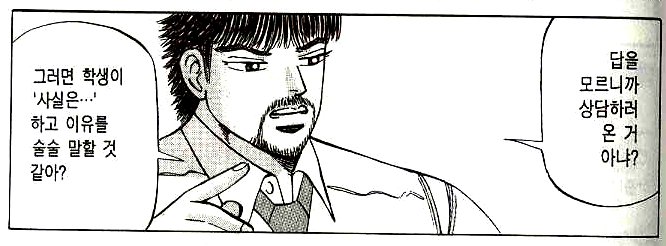

생활지도의 실제
“어두운 방에 좁은 틈으로 새어 들어오는 빛을 보라. 물체에 닿으면 격렬하게 부딪히거나 체념하여 수직으로 떨어지지 않고 그곳에 자리를 잡고 물체를 조용히 비춘다.”
- 아우렐리우스, ⟪명상록⟫
1. 생활지도에 포함된 개념
- 학생의 생활을 학교 규칙에 맞도록 변화시키기
- 학생에 대해 잘 이해하기
- 학생과의 관계를 향상시켜 수업에 도움을 받기
- 학생들 사이의 갈등을 해결하기
- 학생과 교사 자신의 갈등을 해결하기
지각하는 아이, 떠드는 아이, 담배 피는 아이, 화장하는 아이, 무단결석하는 아이, 교실 어지르는 아이, 교복 안 입는 아이, 다른 친구 괴롭히는 아이, 기물 파손하는 아이 등을 지각 안 하도록, 떠들지 않도록, 담배 피지 않도록, 화장하지 않도록, 무단결석하지 않도록, 교실을 어지르지 않도록, 교복을 입도록, 다른 친구를 안 괴롭히도록, 기물을 파손하지 않도록 변화시킬 수 있을까?
변화는 처벌에 의해서도 가능하고 칭찬에 의해서도 가능한데, 요즘은 학생을 변화시킬 만큼 강한 처벌을 할 수가 없는 시대이다. ‘칭찬’은 아무에게나 받는다고 모두 효과가 있는 것이 아니다. 학생이 ‘훌륭한 분이다.’라고 인정하여 스스로 권위를 부여한 사람이 해 주는 칭찬만이 학생의 변화를 이끈다. 결국 우리는 학생을 어떻게 규칙에 맞도록 변화시킬 것인가가 아니라 어떻게 하면 ‘나’를 학생이 인정하고 권위를 부여할 만한 사람으로 변화시킬 것인가에 대하여 연구해야 한다.
학교 규칙이라고는 해도 ‘교칙에 언급되지 않는 기본적인 규칙’과 ‘교칙에만 규정되는 특수한 규칙’과 ‘법률에 규정되는 일반적인 규칙’이 섞여 있다. ‘교칙에 규정된 것’과 ‘법률에 규정된 것’은 교칙과 법률의 규정에 따라 처리하면 된다. 다만 교칙의 일반적인 문제는 ‘이렇게 해야 한다’라고는 적혀 있지만 ‘이렇게 하지 않으면 어떻게 한다’라는 처벌 규정이 명시되어 있지 않기 때문에 규칙을 지키지 않은 경우의 대응이 교사의 재량에 맡겨진다는 점이다. (참고로, 생활지도의 기본은 " 결과 안내 중심의 훈육"이다. 그런데, 어겼을 때의 지침이 재량에 맡겨진 경우, 교사가 원칙을 정확히 세우지 않으면 "결과 안내 중심의 훈육"의 힘이 사라진다.) 그래서 ‘교칙에 언급되지 않는 기본적인 규칙’과 ‘교칙에서 처벌 규정이 명시되지 않은 규칙’은 묶어서 ‘상담’의 영역으로 넘어가고, ‘교칙에서 처벌 규정이 명시된 규칙’과 ‘법률에 규정된 일반적인 규칙’은 선도위원회나 학폭위원회 또는 검찰로 넘어간다.
2. 상담과 생활지도
‘상담’이라고 하면 몇 가지 장면이 떠오른다. 첫째, 3월에 학생들을 파악하기 위해 한 명씩 불러서 담임 선생님과 학생이 나누는 대화. 둘째, 문제 있는 학생과 교사가 문제 행동에 대하여 나누는 대화. 셋째, 학생이 고민이 있어서 교사를 찾아와서 위로나 조언을 구하는 대화. 이중 첫째와 둘째는 상담이 아니다. ‘상담’을 모욕하는 말이다. 첫째는 굳이 이름 붙이면 ‘면담’이고 둘째는 ‘취조’ 아니면 ‘훈육’ 정도가 될 것이다. 셋째의 경우가 상담이며, 전문적인 상담 기술이 필요한 주제라면 교내의 전문 상담 교사나 외부의 상담기관에 맡겨야 하고, 일반적인 주제라면 간단한 상담 대화 기술을 배워서 교사가 해결할 수 있다.

요즘은 어떤지 모르겠지만 담임을 할 때 NEIS 시스템에 상담 기록을 남기라고 하면서 이런 시스템을 만들어 준 적이 있었다. 상담의 소분류를 만든 사람이 상담을 뭐라고 생각하는지 알 수 있다.
‘상담’과 생활지도의 관계는 어떠할까? 지각하는 아이, 떠드는 아이, 담배 피는 아이, 화장하는 아이, 무단결석하는 아이, 교실 어지르는 아이, 교복 안 입는 아이, 다른 친구 괴롭히는 아이, 기물 파손하는 아이를 ‘상담’을 통해 변화시킬 수 있을까? 애초에 질문이 틀렸다. 상담은 상대를 변화시키기 위한 대화법이 아니다. 상담은 오직 ‘상대를 이해하기 위한’ 대화일 따름이다. 이러한 상담의 정의가 앞의 셋째, ‘학생이 고민이 있어서 교사를 찾아와서 위로나 조언을 구하는 대화’에 적용될 수 있을까? 교사는 조언을 구하며 고민하는 학생에게 조언을 줄 수 있다. 하지만 그보다 더 중요한 것은 학생의 고민을 ‘이해’하는 것이다. 학생의 고민을 어느 수준까지 이해하는가에 따라 위로와 조언의 영향력이 커지기도 하고 작아지기도 한다.
‘학생을 이해’하는 것은 상담에서도 중요하지만 ‘3월에 학생들을 파악하기 위해 한 명씩 불러서 담임 선생님과 학생이 대화를 나눌 때’에도 중요하고, ‘문제 있는 학생과 교사가 문제 행동에 대하여 나누는 대화’ 즉, 앞에 나왔던 ‘교칙에 언급되지 않는 기본적인 규칙’과 ‘교칙에서 처벌 규정이 명시되지 않은 규칙’을 어긴 학생과의 대화, ‘교칙에서 처벌 규정이 명시된 규칙’과 ‘법률에 규정된 일반적인 규칙’을 어긴 학생과의 대화에서도 중요하다.
생활지도의 출발점을 ‘학생의 이해’로 잡으면 여러 가지 장점이 있는데, 첫째, 학생이 ‘이해 받는다’는 기분이 들어서 마음이 열린다. 그러면 저절로 교사의 말을 잘 듣게 된다. 학생이 자신의 결심을 지속적으로 실천하는 것과는 조금 다른 문제이다. 둘째, 학생을 진심으로 이해하게 되면, 교사는 학생에게 외부의 규칙을 일방적으로 강요하지 않게 된다. ‘지각했다’라는 현상과 ‘지각하면 안 된다’는 규칙만 존재하는 이분법적 사고에서는 교사도 길을 잃기 쉽다. 학생을 제대로 이해하고 나면 ‘지각했다’라는 현상에 얽매이지 않고 다른 방식으로 학생의 성장을 도울 길을 찾게 된다.
‘학생을 이해’하기 위해, "힘들어요." 하는 학생에게 "왜 힘드니?"라고 묻는 것은 적절하지 않다. "불안해요." 하는 학생에게 "왜 불안하니?"라고 묻는 것도 적절하지 않다. 아래 영상의 '불안해 하는 사람' 표정을 보자. 불안해 하는 사람에게 말 거는 옆 사람의 대응이 적절해 보이는지?
‘학생을 이해’하기 위해 기초적인 수준의 상담 대화 기술을 응용하면 큰 도움이 된다. 마음으로 학생을 이해한다고 해도 "대화 기술"이 부족하면 한계에 부딪힌다. 아래 만화를 보자.(오른쪽부터 왼쪽으로 읽음)





생활지도에 유용한 기초적인 상담 수준의 대화를 배우고 싶다면 이 아래를 마저 읽으면 된다.
3. 생활지도와 교과 수업
비담임은 학생과 교과 수업 시간에만 만난다. 교과 수업 시간에 학생들과의 관계를 형성해 가면서 수업도 진행해 나가려면 오랜 숙련의 시간이 필요하다. 학생들과의 접촉 시간이 짧아 레포를 형성하기 어려운데, 학문의 길은 원래 어렵고 지루하기 마련이라 학생들이 고된 시간을 견뎌야 하지만 요즘 학생들은 점점 앉아 있기 힘들어 하고, 교사는 ‘수업 내용을 제대로 전달’하는 데에만 모든 힘을 쏟아도 모자랄 판에 ‘앉아 있기 힘들어 하는 학생들을 앉아서 듣게 만드는’ 데에도 많은 힘을 들여야 하므로 정해진 수업 시간 내에 둘 중 한 쪽에 무게중심이 쏠리게 마련이다. 어느 한 쪽에 더 많이 신경을 쓰다 보면 다른 한 쪽이 미진해지고, 그 미진함은 수업을 마치고 교실을 나오는 교사의 마음에 허전함과 무력감을 남긴다.
비담임 교사는 수업이 아닌 시간에 학생들과 접촉할 기회가 자주 있다. 그럴 때 ‘상담 대화 기술’을 이용해서 학생을 이해하는 노력을 해 두면, 교사에게 이해 받았다는 기분을 느낀 학생들은 수업 시간에 ‘어렵고 지루한’ 시간을 참고 견디려는 노력을 조금 더 하게 된다. 그것도 자발적으로. 그리고 그 학급의 모든 학생이 교사와 서로 이해하는 관계를 맺지 않더라도 참고 견디는 학생들의 수를 한 명씩 한 명씩 늘려나가는 것은 그 학급이라는 ‘집단’에 영향을 주게 된다. 이것이 집단 리더십의 메커니즘이다. 완벽한 목표를 세우지 말고 차근차근 작은 목표부터 해결해 나가면 된다. 그럴 때 그 실천을 포기하지 않게 만드는 힘은 믿음이다. 학생 개인과 서로 이해하는 관계 맺기, 학급의 일부 관계를 조금씩 늘려감으로써 학급 전체에 대한 교사의 영향력을 키워가는 일이 실제로 가능함을 믿어야 한다. 그 믿음은 작은 실천을 통한 성공의 경험에서 온다.
우선 다음을 실천하는 일에서 시작해 보자.
- 사실 듣기: 학생의 말을 그대로 따라 말해준다.
- “네 말은 ~라는 말이구나.”
- 기분 듣기: 말 속에 담긴 기분을 알아차려 대신 말해준다.
- “그랬다면 너는 ~, ~, ~이런 기분이겠구나.”
- 본심 듣기: 학생의 말 속에 담긴 본심을 알아차려 대신 말해준다.
- “네가 진짜로 원하는 것은 ~라는 말이지?”
(1) 다음에 (2)를 하는데, (2)를 3회 정도 반복한다. 3회는 최소한의 기준이며, 학생이 “네.”하고 나서 “네. 근데요~.”라고 말을 덧붙인다면, (1)과 (2)를 무한 반복한다. 드디어 학생이 “네.”라고 말을 하고 더 이상 아무 말도 하지 않을 때 (3)으로 넘어간다.
이것은 일상 생활 속에서 누구에게나 활용이 가능하며, 어떤 대화라도 성공적으로 이끄는 거의 유일한 대화 기술이다. 성공이라 함은 대화를 마친 후에 긍정적인 기분이 들고, 서로에 대한 이해가 깊어지고, 욕구가 충족되는 것이다.
사람들은 타인에게 말을 걸 때 자신이 미처 인식하지 못하는 경우에라도 반드시 ‘욕구’를 가지고 있다. 그런데 그 ‘욕구’에 대한 패턴화된 사고방식이 있어서 어떤 ‘감정(들)’이 발생한다. 그 감정은 ‘욕구’를 ‘말’로 발화하는 데에 ‘노이즈’가 된다. ‘노이즈’는 ‘욕구’를 있는 그대로 말로 표현하지 못하도록 방해한다. 결국 감정에 의해 노이즈가 낀, 실제 발화되는 ‘말’은 ‘욕구’의 왜곡된 형태가 되고 만다.
“느 집엔 이거 없지?”는, “너랑 친하게 지내고 싶다.”라는 욕구를 가진 점순이가, 남들의 시선이 무서운 당시 상황에서, 그 욕구에 대하여 ‘눈치보이고’, ‘조심스럽고’, ‘위축되고’, ‘조바심나고’, ‘쑥스럽고’, ‘민망하고’, ‘간절하고’, ‘수줍고’, ‘기대되고’ 등의 감정이 느껴지는 바람에 왜곡되어 튀어나온 말인 것이다. “느 집엔 이거 없지?”라는 말을 듣고, 그 ‘말’ 때문에 발끈하기 전에, 그 말을 하게 만든 점순이의 ‘욕구’에 대하여 ‘이해’하려는 태도가 필요하다.
만약 ‘나’가 교사이고 ‘점순이’가 학생이라면 이런 대화가 가능하다.
|
학생: 선생님, 저 독서 경진 대회 안 나가면 안 돼요? |
위의 사례에서 학생이 “독서 경진 대회 안 나가면 안 돼요?”라고 물은 것은 ‘말’일뿐, 그 학생의 ‘욕구’ 즉, ‘본심’이 아니다. (1) 사실 듣기 와 (2) 기분 듣기 를 반복한 결과 학생은 감정의 노이즈가 모두 걷히고 “독서 경진 대회용 도서 목록을 한 장 받아 가고 싶다.”라는 본심에 도달한다. 왜 처음부터 “도서 목록 한 장만 더 주세요.”라고 욕구를 곧바로 말하지 못하는가? 교사가 준 종이를 잃어버렸다고 혼날까봐 ‘무서움’, ‘두려움’, ‘불안함’ 등이 본심을 왜곡하는 감정적인 요인이 되기 때문이다.
(1) 사실 듣기 와 (2) 기분 듣기를 제대로 해 주면 (3) 본심 듣기는 교사가 굳이 말로 해주지 않아도 되는 경우가 많다. 감정적으로 편안한 상태가 되면 학생은 자신의 본심을 있는 그대로 볼 수 있게 되기 때문이다. 감정적으로 편안한 상태가 되면 학생은 분별력을 차리고 가장 최선의 판단을 이성적으로 내릴 수 있게 된다.
|
학생: 쌤 스승의 날에 몇 시에 끝나요? |
위는 문자 메시지 대화이다. 학생이 스승의 날 마치는 시간이 궁금해서 문자 보낸 게 아니다. 본심은 문과, 이과 결심에 대한 조언을 얻고 싶은데 그걸 갑자기 문자 보내서 “선생님 저 문과 갈까요, 이과 갈까요?” 하기에는 좀 민망하고, 죄송스럽고, 미안하고 해서 첫 마디를 저렇게 꺼낸 것이다. 그리고 교사가 (1) 사실 듣기와 (2) 기분 듣기를 반복하는 사이 학생은 스스로 결단을 내리게 된다.
위 영상 속의 아이도 "(1) 사실 듣기와 (2) 기분 듣기를 제대로 해 주면 아래와 같이 정상적인 반응을 보인다.
(1) 사실 듣기도 중요하지만 가장 중요한 것은 (2) 기분 듣기이다. 학생의 본심/욕구로 도달하는 길을 찾는 열쇠가 바로 ‘감정/기분’이기 때문이다. 청소년의 뇌를 ‘파충류의 뇌’라고 하면서 청소년의 심리를 이해하려는 정신과 의사들의 강연이나 책을 볼 수 있는데, 파충류의 뇌를 가진 청소년을 영장류의 뇌를 가진 청소년으로 간단히 바꿀 수 있다. 다음 예를 보자.
|
새해 맞이 목욕탕에 갔다. 살고 있는 지자체에서 제일 큰 탕이라 사람이 많이 붐볐다. 입장권을 사려 계산대 쪽으로 가자 초등학교 고학년쯤 되는 덩치 큰 여자 아이가 중년 여성 머리채를 자꾸 잡고 때린다. 엄마치고는 나이가 많아 보이지만 엄마인가보다. 하지말라고 하는 엄마 머리채를 끌고 이리저리 다닌다. 보다 못한 한 젊은 아줌마가 “아가! 이러는거 아니야! 아가!”하며 둘을 떼어 놓는다. 어처구니가 없다. 엄마의 처지가 딱하다. 막장 드라마를 보는 것 같다. 계산을 막 하려는데 그 엄마가 내 어깨를 지나 계산대 직원에게 “취소해 주세요.”라고 말한다. 그 찰나에 또 딸이 엄마 머리를 채어 간다. 당황스럽고 혼란스러웠다. 잠시 망설여진다. 그 엄마를 도와야겠다 싶어 딸의 손목을 잡았다. 생각보다 힘이 세다. 나도 아귀에 힘을 더 주었다. “야! 그만해!” 하려다가, “친구가 화가 엄청 많이 났나 보네...” 라고 했다. 딸이 주춤하더니 눈물이 핑 도는 얼굴을 돌려 밖으로 나간다. 많은 사람들 앞에서 저도 할 말이 있었나 보다. ‘화났냐’는 한 마디에 무너져 눈물을 흘리는 아이도 절절매며 따라 나서는 엄마도 뭔지 모를 그 사연이 참으로 딱했다. - 김*현 선생님(충남) 제공 |
파충류의 뇌는 청소년만의 특징이 아니다. 어른이라도 격한 감정에 휩싸이면 파충류의 뇌가 된다. 파충류 같은 학부모가 얼마나 많은가. 때로는 교사 자신이 감정에 휩싸여 조절이 안 되는 경험도 하게 된다. 그런 경우에도 그 모든 것을 지배하는 것은 ‘감정/기분’이다.
아래는 청소년이 아닌, 어른에게 위의 대화 방법을 적용한 사례들이다.
|
“아들이 대학 졸업하고 취직 시험을 준비하는데 스트레스 쌓인다고 술을 먹고 오는 날이 많아요. 술을 끊어야 시험도 붙고 할 텐데 그걸 생각하면 너무 속이 상해서 나도 좋은 말이 안 나오고 잔소리처럼 하게 되고, 그러면 또 내 말 때문에 아들은 더 스트레스 받고 요즘은 나한테 마음의 문을 닫은 거 같아요. 어떻게 하면 좋지요?” 하길래 속상한 감정을 알아드리고, 아들의 ‘감정/기분’을 들어주는 말을 해 보라고 알려 드렸다. “얼마 전에 우리 아들한테 ‘니가 많이 힘들구나.’라고 말해 봤어요. 그 뒤로 별 말도 안 했는데 ‘힘들구나’ 4글자에 아들이 갑자기 변했어요. 내가 무슨 말을 해도 순하게 듣고. 다시 예전 어릴 때처럼 나한테 이야기도 많이 하고. 내가 자기 마음을 알아준다고 생각해서 그런지 아들도 마음의 문을 다시 연 거 같았어요. 전에는 무슨 말을 해도 벽에 막힌 걸 억지로 뚫고 들어가는 기분이었는데..” |
|
어머니가 치매끼가 있는데 모시고 살 형편이 안 되어 간병인을 써요. 얼마 전에 간병인을 새로 구했는데 다른 지역에 계셔서 새 간병인을 자주 만나는 것도 아니고 잘하니 못하니 참견한 적도 없는데 갑자기 전화가 왔어요. 자꾸 어머니 주변 분들이 지난 번 간병인이랑 비교한다는 거예요. 전에 그 사람은 이렇게 했는데,, 저번 사람은 이런 것도 하던데,, 간병인은 자기딴엔 최선을 다하는데 이런 소리를 자꾸 들으니까 열받아서 저한테 전화한 거라면서 전화 받자마자 막 큰소리로 흥분해서 쏘아붙이더라고요. 저는 놀라고 당황해서 뭐라고 말할까 하다가 상대의 마음을 알아줘야 된다는 게 알아차려지더라고요. 그래서 “많이 속상하고 서운하셨지요.” 했더니 갑자기 조용해지면서 한동안 말이 없다가 “아, 제가 너무 화를 냈네요. 미안합니다.” 하는 거예요. 너무 놀랍기도 하고 기쁘고 뿌듯했어요. 그리고 좋게 끊었는데 또 한참 있다가 문자도 왔어요 아까는 정말 미안했다면서.. |
4. 학생들 사이의 갈등 해결
- 학생의 생활을 학교 규칙에 맞도록 변화시키기
- 학생에 대해 잘 이해하기
- 학생과의 관계를 향상시켜 수업에 도움을 받기
- 학생들 사이의 갈등을 해결하기
- 학생과 교사 자신의 갈등을 해결하기
(1) 사실 듣기, (2) 기분 듣기, (3) 본심 듣기 의 원리를 이용하면 학생들 사이의 갈등을 해결하는 데에 도움이 된다. 갈등으로 감정이 격해진 학생들이 서로 가장 중요한 (2) 기분 듣기를 할 수 있도록 교사가 기회를 만들어주기만 하면 된다. 1:1로 다툰 경우, 교사는 시작 전 사실 관계를 확인하고 학생들이 작업에 참여할 기분인지를 확인하고 기분을 들어주어 참여 동기를 높인다. 중간 중간 학생들의 감정을 들어준다. 마치고 학생들의 기분을 또 들어주고 교사의 감정을 표현하거나 칭찬 등을 곁들인다. 절대 시시비비를 가리지 않으며, 이 사태나 학생이 느끼는 감정에 대한 교사의 판단을 말하지 않는다.